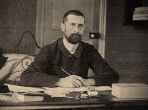
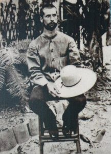
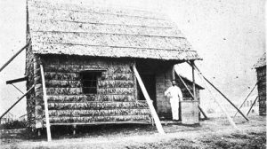
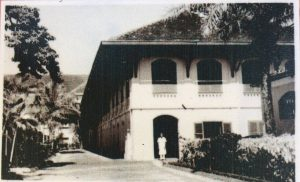

GIỚI THIỆU
Trong số những học trò và môn đệ của Louis Pasteur, bí ẩn nhất có lẽ là Alexandre Yersin, gốc Thụy Sỹ (sinh năm 1863 tại Morges) nhưng nhập quốc tịch Pháp vì nhu cầu nghiên cứu khoa học. Yersin vừa làm vừa học và sớm lên đường sang Đông Dương, nơi ông sống phần quan trọng nhất của đời mình, lánh chốn thị thành Paris ồn ã và xa khỏi chiến tranh. Ở Đông Dương, ông mở rộng nghiên cứu dịch tễ học, địa lý, thiên văn và khí tượng học. Quả là người trẻ luôn tò mò về mọi thứ, đặc biệt là Yersin. Vốn là một trong số các nhà nghiên cứu trẻ tuổi góp mặt ở Viện Pasteur thành lập năm 1887, Yersin có chí hướng phiêu lưu ngay từ khi ấy. “Đời mà không đi thì còn gì là đời nữa”, ông viết. Rất sớm, ông đã sang châu Á, trở thành thủy thủ, rồi nhà thám hiểm. Năm 1894, ông trở thành người phát hiện ra vi trùng dịch hạch; ông sống ở Nha Trang, Đông Dương, cách xa hẳn những cuộc chiến tranh, nghiên cứu khoa học, thúc đẩy việc trồng cây cao su và cây ký ninh. Ông qua đời vào năm 1943, khi Đông Dương nằm dưới sự chiếm đóng của quân đội Nhật Bản.

Patrick Deville.
Là bạn của chính trị gia Doumer, Yersin là người khai sinh ra thành phố Đà Lạt (Việt Nam), sau đó ông chuyển đến sống ở Nha Trang, say sưa thực hiện các hoạt động nghiên cứu đa dạng của mình. Nuôi bò, trồng cây cao su, phong lan, ký ninh: đáng ra ông có thể giàu to nhưng toàn bộ tiền của được rót cho nghiên cứu và viện Pasteur được thành lập vào thời gian đó. Toàn tâm toàn ý với khoa học, ông sẽ không lấy vợ sinh con. Thỉnh thoảng có quay lại châu Âu, nhưng ông thường biết thông tin về các cuộc xung đột quốc tế và sự tàn bạo của chúng từ xa qua đài báo. Trước khi qua đời vào năm 1943, Yersin ý thức được, mà không thực sự thấy cay đắng, rằng tên tuổi mình sẽ không có được niềm vinh quang sau khi mất như người thầy Pasteur, và sẽ chủ yếu được gắn với việc tìm ra trực khuẩn gây bệnh dịch hạch ở Hồng Kông năm 1894.
Để kể lại cuộc phiêu lưu khoa học cũng như cuộc đời của con người tuyệt diệu này, Patrick Deville đã lần theo dấu chân của Yersin trên khắp thế giới, ông cũng tham khảo thư từ và tài liệu được lưu trữ tại các Viện Pasteur. Nổi bật vì chất thơ lãng đãng xen kẽ tính triết lý sâu sắc, cuốn sách có thể coi như một bức chân dung đầy lý thú về một con người kỳ lạ đã chọn cuộc sống gần nửa thế kỷ ở xứ xở xa xôi bên bờ biển Đông.
Cuốn sách đã lọt vào chung khảo giải Goncourt và nhận giải thưởng Femina năm 2012, hai giải thưởng văn học danh giá nhất của Pháp. Ngoài ra nó còn nhận “Giải của Các giải văn học” (Le Prix des Prix littéraires) và “Giải tiểu thuyết” của tập đoàn Fnac (Prix du roman Fnac).
* *
TIỂU SỬ BÁC SĨ A.YERSIN
Alexandre Emile John Yersin
(1863 – 1943)

Alexandre Emile John Yersin sinh ngày 22/09/1863 ở tỉnh Morges tại miền Đông tổng Vaud, hạt Lavaux, Thụy Sĩ.
A.Yersin là con út trong gia đình có ba người con, có mẹ là người Pháp, cha là người Thụy Sĩ.
Ông là vừa là một bác sĩ, vừa là một nhà thí nghiệm về vi khuẩn và cũng là một nhà thám hiểm đầy đam mê
Khi 15 tuổi, A.Yersin đã có khuynh hướng về khoa học tự nhiên, đặc biệt là yêu thích sưu tầm các loại côn trùng. Sự nghiệp khoa học của Yersin sau này mang những dấu ấn rõ nét của sở thích từ thuở ấu thơ.
Sau khi tốt nghiệp trung học, năm 1883 Yersin đến Lausanne ( Thuỵ Sĩ) để học y khoa, rồi sang Marburg, Đức, tiếp tục theo ngành học của mình. Trong thời gian lưu trú ở Marburg, qua báo chí Yersin đọc biết về David Livingstone – nhà truyền giáo và nhà thám hiểm người Scotland và Livingstone trở thành hình mẫu lý tưởng cho chàng trai A.Yersin nhiều hoài bão.
Năm 1885, ông đến Pháp, nghiên cứu y học tại Hotel-Dieu de Paris (bệnh viện lâu đời nhất Paris, liên kết với Khoa Y thuộc Đại học Paris Descartes). Tin tức, những chuyến đi, và những tấm bản đồ về Đông Dương đã khơi dậy niềm đam mê thám hiểm của chàng sinh viên y khoa, người trong suốt cuộc đời luôn muốn khám phá những điều mới mẻ. Năm 1886, ông gia nhập viện nghiên cứu của Louis Pasteur tại Trường Sư phạm Paris do lời mời của Émile Roux, và tham gia việc phát triển huyết thanh ngừa bệnh dại.
Ở tuổi 25, ngay sau khi nhận văn bằng Tiến sĩ Y khoa với luận án Étude sur le Développement du Tubercule Expérimental (Nghiên cứu về sự phát triển của bệnh lao bằng thực nghiệm), A.Yersin liền sang Berlin để kịp ghi danh theo học lớp vi trùng học kỹ thuật do Robert Koch giảng dạy. Trở về Paris, A.Yersin xin nhập quốc tịch Pháp bởi vì lúc ấy chỉ có công dân nước Cộng hòa Pháp mới được hành nghề y. Ông gia nhập Viện Pasteur ở Paris mới được thành lập vào năm 1889, làm người cộng tác với Roux, hai người cùng khám phá ra độc tố bạch hầu (do trực khuẩn Corynebacterium diphtheriae tạo ra).

.A.Yersin năm 1892

Yersin và lán tre phủ rơm, nơi ông tìm ra trực khuẩn gây bệnh dịch hạch
Sau Bombay, A.Yersin quyết định trở về Nha Trang trong năm 1898. Với sự hỗ trợ từ Toàn quyền Doumer, ông xây dựng Viện Pasteur Nha Trang

Viện Pasteur Nha Trang được xây dựng bởi A.Yersin từ năm 1904
A.Yersin thích biết mọi thứ, ông là chuyên gia về nông học nhiệt đới, nhà vi trùng học, nhà dân tộc học, nhiếp ảnh gia, nghiên cứu khí tượng. Ông mua máy điện lượng kế, làm một con diều thật lớn thả lên độ cao một ngàn mét để đo điện khí quyển và dự đoán giông bão. Ông muốn giúp những người dân chài dự báo khi có lốc xoáy trên biển. A.Yersin thuyết phục Fichot, một kỹ sư thủy văn phục vụ trong hải quân và rất say mê thiên văn học, đến sống với ông trong ngôi nhà ở Xóm Cồn với kính thiên văn và máy quan tinh được lắp đặt trên sân thượng để cùng nhau nghiên cứu khí tượng.
Trong những ngày cuối đời, A.Yersin gắn bó với niềm đam mê mới: Văn chương. Ở tuổi tám mươi, ông lại học tiếng Latin, tiếng Hy Lạp, và biên dịch những tác phẩm của Phèdre, Virgile, Horace, Salluste, Cicéron, Platon, và Démosthène.
Ngày 1 tháng 3 năm 1943, A.Yersin từ trần tại nhà riêng ở Nha Trang, ông để lại di chúc, “Tôi muốn được chôn ở Suối Dầu. Hãy chôn tôi nằm úp xuống. Yêu cầu ông Bùi Quang Phương giữ tôi lại tại Nha Trang, đừng cho ai đem tôi đi nơi khác. Mọi tài sản còn lại xin tặng hết cho Viện Pasteur Nha Trang, và những người cộng sự lâu năm. Đám tang làm giản dị, không điếu văn”. Dù vậy, rất đông người tìm đến để đưa tiễn ông về nơi an nghỉ cuối cùng. Nhiều người dân Xóm Cồn và Nha Trang than khóc và để tang cho ông. Đoàn người đưa tang dài đến hơn ba cây số.